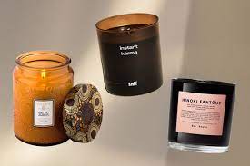
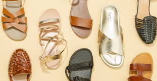

Trending Products for 2024
Candles
Bath and Body works are known for their candles. I have two favorite candles I purchase from them. I usually get the watermelon lemonade and the Champagne Toast scent.
Nail Polish

One of my favorite gel nail polish is Essie Gel Couture nail polish. When I used this nail polish, it will last me about 7 to 10 days. This polish is definitely a 10 out of 10 for me.
Sandals
Currently, the sandals that are in style are the open toe platform. Those are my favorite. You can wear platform sandals with any look you are trying to go for.
Make up

From reviews, IL Makiage is one of the popular make up lines for oily or dry skin. According to the site, they can find the right match for you.
Fall Drinks

Spring is here but I still go for my fall drinks all year long. One of my favorite fall drinks I get is Cinnamon Dolce Latte.
Popular Programming Languages

According to a few websites I reviewed, python is one of the top programming languages for 2024. Python is a beginner friendly language to learn and there are alot of employers looking for experience python developers. Another popular language used for web development is Javascript.